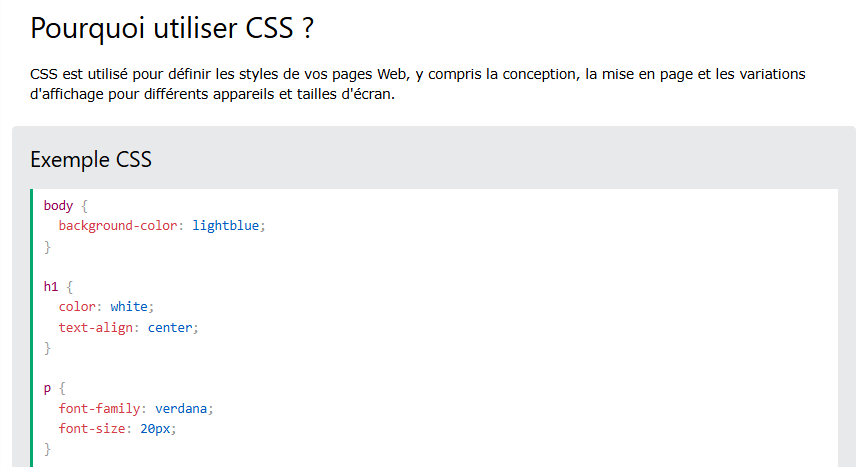
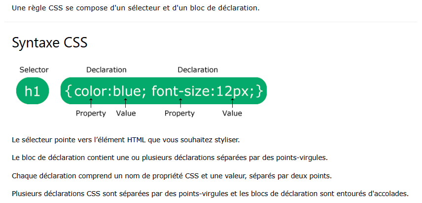
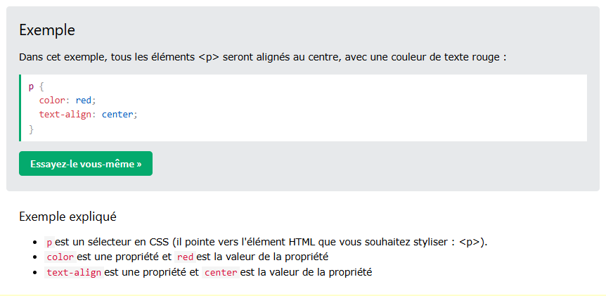
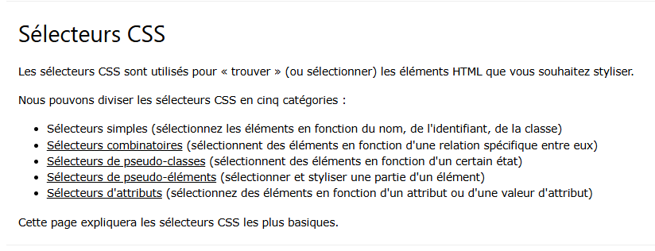
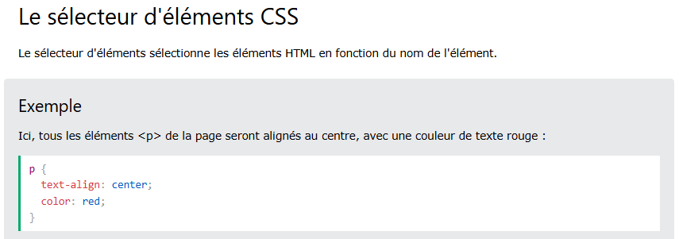
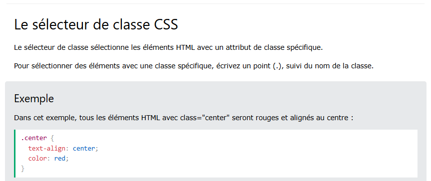
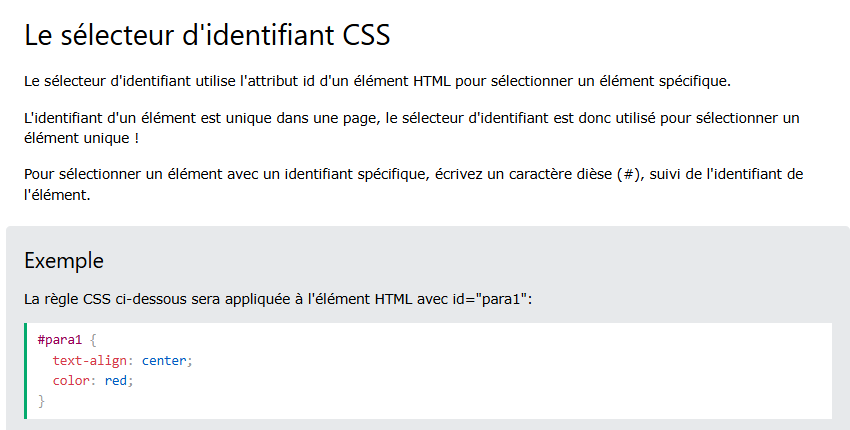
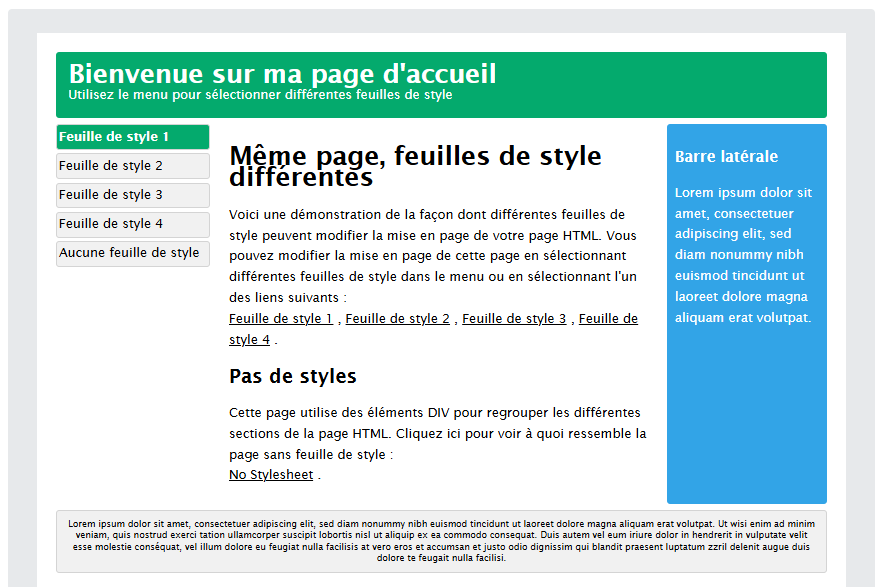

Bienvenue dans notre site web Dev's community, un site particulierement concu pour les developpeurs web que ceux soient novices, experimentes ou professionnels souhaitant ameliorer leurs experiences sur le developpement web !
Qu'est-ce que CSS ?
CSS est l'acronyme de Cascade Style Sheet
CSS décrit comment les éléments HTML doivent être affichés sur un écran, sur du papier ou dans d'autres médias
CSS permet de gagner beaucoup de temps.
Il permet de contrôler la mise en page de plusieurs pages web simultanément.
Les feuilles de style externes sont stockées dans des fichiers CSS
Le langage CSS
Les feuilles de style en cascade, généralement appelées CSS de l'anglais Cascading Style Sheets, forment un langage informatique qui décrit la présentation des documents HTML et XML. Les standards définissant CSS sont publiés par le World Wide Web Consortium (W3C).
Introduit au milieu des années 1990, CSS devient couramment utilisé dans la conception de sites web et bien pris en charge par les navigateurs web.
Le concept de feuille de style est présent depuis l'origine du World Wide Web : le premier navigateur web WorldWideWeb permet de mettre en forme les documents à l'aide de ce qui serait aujourd'hui considéré comme une « feuille de style utilisateur »[1]. De même, les navigateurs Viola en 1992 et Harmony en 1993 recourent à un mécanisme similaire permettant...
De même, les navigateurs Viola en 1992 et Harmony en 1993 recourent à un mécanisme similaire permettant de déterminer le rendu des polices de caractères...
Il ne s'agit cependant pas de styles déterminés par l'auteur du document. HTML ne comportant pas non plus d'éléments de présentation dans ses premières années, une pression croissante s'exerce alors pour que les .../p>
Continuer la lecture
Les sélecteurs vont permettre de cibler les éléments que l'on souhaite mettre en forme dans notre page web. Ils peuvent être plus ou moins complexes suivant les situations.
Comme nous l'avons vu dans le chapitre précédent, il est possible de définir la couleur de certains éléments mais nous n'avons pas forcément parlé des formats de couleurs acceptés. Aussi, je vous propose de nous arrêter un moment pour voir comment on peut décrire une couleur en CSS
Comme avec les couleurs, il est possible de définir les dimensions de nos éléments de plusieurs manières. En plus des unités classiques comme le pixel ou le cm, il existe de nombreuses unités spécifiques au CSS qui peuvent être pertinentes suivant les situations..







La première proposition de Cascading HTML Style Sheets formulée par Håkon Wium Lie retient l'attention de Dave Raggett, qui est alors le principal éditeur du projet de spécification HTML 3.0[8]. Partisan d'un HTML purement structurel, il encourage la publication d'un document de travail CHSS, afin que celui-ci puisse être présenté et discuté à la seconde conférence internationale sur le WWW (Mosaic and the Web, Chicago, 1994). Il modifie également avec Håkon Lie le navigateur Arena[n. 3], afin de permettre de tester ce langage, et en fait la démonstration lors de la troisième conférence WWW en 1995.
Parallèlement, Bert Bos, qui travaillait alors sur le navigateur Argo[9], et qui avait soumis au W3C son propre projet « Stream-based Style Sheet Proposal » (SSP), décide de joindre ses efforts à ceux d'Håkon Lie. SSP ayant été développée avec l'idée d'être applicable non seulement à HTML, mais aussi à d'autres langages de balisage, Bert Bos et Håkon Lie reprennent cet objectif, et en font une des caractéristiques clés de ce qui devient alors CSS proprement dit.
Remarque: un nom d’identification par exemple #p ne peut pas commencer par un chiffre.
un nom de classe par exemple.p ne peut pas commencer par un chiffre.
Exemple de feuille de style CSS

Démo CSS - Une page HTML - Plusieurs styles !
Nous allons ici afficher une page HTML avec quatre feuilles de style différentes. Cliquez sur les liens « Feuille de style 1 », « Feuille de style 2 », « Feuille de style 3 » et « Feuille de style 4 » ci-dessous pour afficher les différents styles :
CSS3
CSS3
Avancée de la spécification CSS3.
Le développement du troisième niveau des feuilles de styles en cascade commence dès 1999, parallèlement à celui de CSS 2.1.
CSS3 devient « modulaire », afin de faciliter ses mises à jour, mais aussi son implémentation par des agents utilisateurs aux capacités et aux besoins de plus en plus variés (navigateurs graphiques, navigateurs pour mobiles, navigateurs vocaux). Les navigateurs peuvent ainsi implémenter des sous-ensembles de CSS3[26].
Dès lors, le degré d'avancement de CSS3 varie selon les modules et le degré de priorité qui leur a été donné par le groupe de travail CSS[27]. En 2007, les modules les plus avancés (recommandations candidates) concernent :
la mise en forme des annotations ruby;
la négociation de style entre serveurs et agents utilisateurs (« Media Queries ») ;
le rendu web TV ;
la gestion des couleurs ;
la prise en compte de la configuration de l'interface utilisateur.
Dans d'autres cas, des modules peuvent atteindre le stade de recommandation candidate, mais être par la suite ramenés au stade de document de travail en raison des difficultés mises à jour à la suite de l'appel à implémentation. C'est par exemple le cas du module de typographie « CSS Text ».
Environ
Personnalisez cette section pour informer vos visiteurs un peu plus sur votre publication, vos rédacteurs, votre contenu ou tout autre chose. C’est à vous de décider.